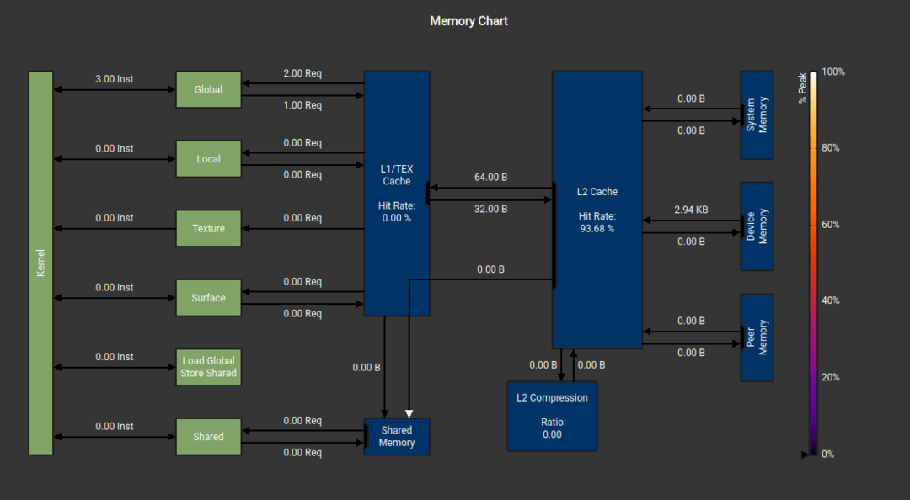
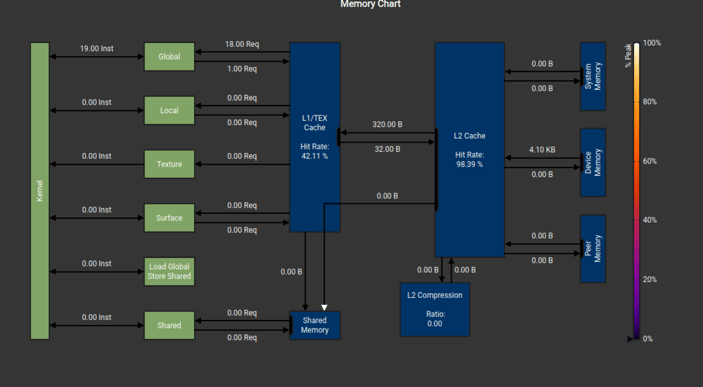

MJX implementation of quaternion multiplication (0% L1 hit rate...)

Matrix implementation of quaternion multiplication (42% L1 hit rate)
The compile time of `mjx.kinematics` with this new implementation is now 1.28s, a 30% improvement from original implementation. This can be explained by the the smaller number of HLO operations, which means less JAX overhead. Runtime is 0.00201s now, a 6% improvement.
Ok, forward kinematics is only a small part of a simulation loop. How much improvement are we seeing with respect to a full simulation loop